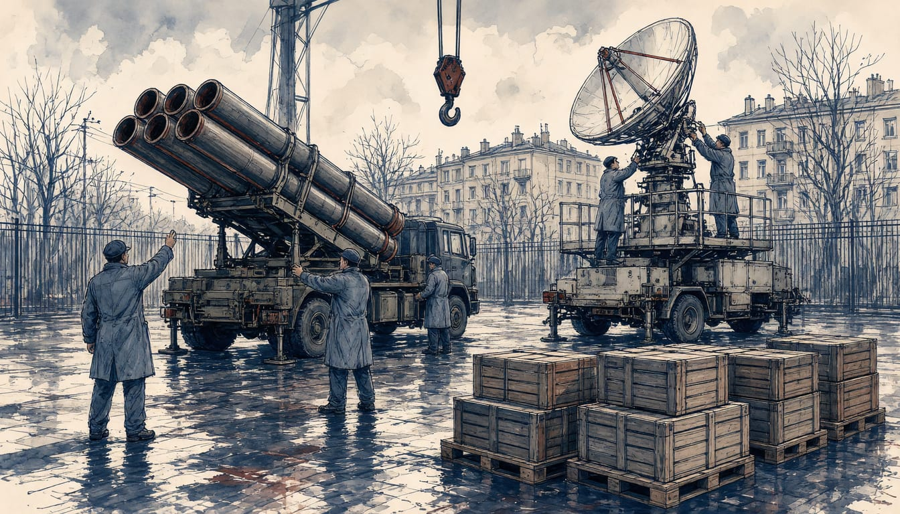

Kyiv expects European-Ukrainian Freyja missile shield this winter
Fire Point targets a Freyja interceptor price below €1 million, said to be far less than a Patriot, with a first ballistic test planned for around July 2027.

Kyiv expects to receive a Freyja missile-defence system this winter and to test it against ballistic threats, President Volodymyr Zelenskyy said on 10 November, calling wider production a priority. Freyja is the system of the Integrated Anti-Ballistic Coalition, which ten European countries founded with a declaration in Paris in July. The signatories are Ukraine, Denmark, France, Germany, Italy, the Netherlands, Norway, Spain, Sweden and the United Kingdom. Politico reported that Freyja is meant as a cheaper, mass-produced alternative to the Patriot PAC-3, and would plug into NATO-standard radars, command posts and data links rather than act as a standalone national system.
In July, British Prime Minister Keir Starmer confirmed that the United Kingdom would join the EU's €90 billion loan for Ukraine. Two-thirds of that money is meant for defence, and joining makes British companies eligible for its contracts. The think tank Bruegel has warned that buying more Patriot missiles will not solve the supply problem, because American interceptors are becoming harder to obtain. It argues that a pan-European missile defence system is critical.
According to Eunews, Fire Point, a Ukrainian defence-tech company, is the prime contractor, holding overall design authority for Freyja and producing its FP-7 missiles, including launch and control. Fire Point is targeting an interceptor price below €1 million, said to be 4 to 6 times cheaper than Patriot; neither figure has been demonstrated. In July, Politico noted that the United States and its allies had fired hundreds of Patriot PAC-2 and PAC-3 interceptors against Iran, and that Ukraine had run dangerously low on interceptors.
At the Eurosatory trade show in Paris, Hensoldt signed a memorandum of understanding with Fire Point to integrate components into Freyja. In August, Fire Point said the proposed launcher would carry four to six FP-7.X interceptors and that it aimed eventually to make 2,000 a year.
The timetable stays conditional. In August, Fire Point co-founder and chief designer Denys Shtilierman said the first FP-7.X interceptors could be ready by the end of 2026. That depends on European governments and manufacturers supplying seekers, a real-time data link and a command-and-control centre. The first test against a ballistic target is planned for around July 2027. It would be the FP-7.X's first ballistic interception and the first result of the ten-country programme.